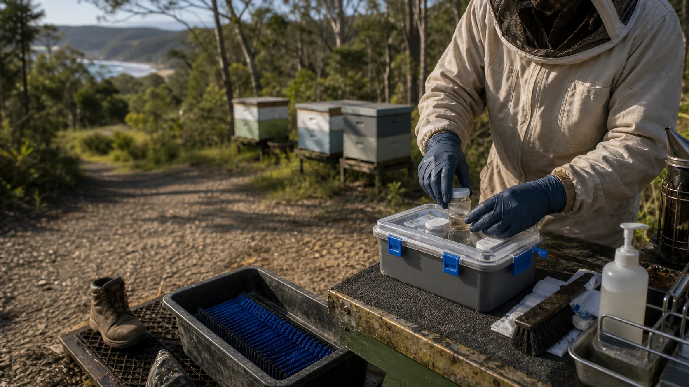

Varroa reporting and containment
Queensland guidance treats varroa as notifiable restricted matter and says beekeepers must report, control or contain it.

Biosecurity should help beekeepers act early. The tone matters: do not move trouble around, do report what the current rules require, and do build a support path that makes responsible action easier.
Legal edges
Most of the site can ask open questions. Some parts need firmer edges because they affect pests, chemicals, native biological resources, registration and reporting.
Queensland guidance treats varroa as notifiable restricted matter and says beekeepers must report, control or contain it.
If someone keeps one or more European honey bee hives in Queensland, the current registration pathway should be checked.
The GBO is the broad duty to manage biosecurity risks under your control. This should be translated into practical beekeeper support.
If any plant-based or other treatment trial is unregistered or off-label, the APVMA research permit pathway matters before hive use.
If the project collects native biological resources from State land or Queensland waters for biodiscovery, collection authority and benefit-sharing rules matter.
The lab should make the official pathway easier to use, not become a parallel rogue system.
Care without blame
People are more likely to share useful information when the project offers clear choices, practical help, simple sample handling and a human who can talk them through what happens next.
Before moving hive gear, samples, colonies, soil, beetles, mites or plant material, who gives the current official advice?
Which tool-cleaning, sample-box, glove, boot and vehicle routines are simple enough for normal beekeepers to keep doing?
How does the working group let each beekeeper choose what is public, what is approximate, what stays in a smaller circle and what only goes through official reporting?
Beekeeper first aid
The first aid kit is not a substitute for official advice. It is a way to help people notice, record and ask for help before problems get blurry.
Alcohol wash or sugar shake kits, sticky boards or equivalent, beetle traps and simple record sheets.
Clean jars, labels, gloves, zip bags, phone photo guide and a clear path for suspicious samples.
Tool cleaning, box separation, avoid moving questionable gear and ask before moving risky material.
QR-coded official links, a calm contact person and reminders that early reporting is a contribution to shared resilience.